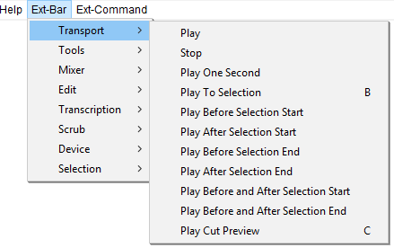

Ext-Bar Menu: Transport
The Ext-Bar > Transport Menu provides playback commands that are not available in the default Audacity menus.
- Click, or hover, on any menu item in the image to read about that command. Skip the image
- 
Play
Play (or stop) audio
Stop
Stop audio
Play One Second 1
Plays 1 second of audio at the current mouse position
Play To Selection B
Plays from current mouse position to selection
For the following six commands, the amount of audio that is played before, after, or surrounding the selection edge, is set by the Cut Preview setting in Playback Preferences.
Play Before Selection Start Shift+F5
Plays a short period before the start of the selected audio.
Play After Selection Start Shift+F6
Plays a short period after the end of the selected audio.
Play Before Selection End Shift+F7
Plays a short period before the end of the selected audio.
Play After Selection End Shift+F8
Plays a short period after the end of the selected audio
Play Before and After Selection Start Ctrl+Shift+F5
Plays a short period before and after the start of the selected audio.
Play Before and After Selection End Ctrl+Shift+F7
Plays a short period before and after the end of the selected audio.
Play Cut Preview C
Plays audio excluding the selection. The amount of audio that is played before and after the section is set by the Cut Preview setting in Playback Preferences.